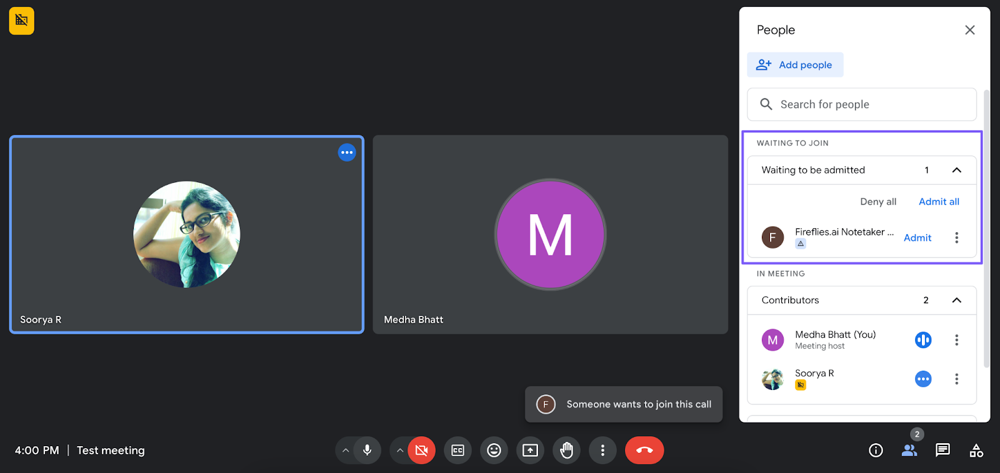

Fireflies.ai pioneered the AI meeting bot space, but in 2026 the "bot joining your call" model feels outdated. Clients see a bot named Fred pop into the meeting and immediately think surveillance. The December 2025 class-action lawsuit over biometric data collection didn't help either.
Whether you're looking for better privacy, no visible bot, or just tired of the $10–19/month per-seat pricing, there are strong alternatives. This guide covers Fireflies itself plus five alternatives worth considering — with honest takes on pricing, privacy, and what each tool does well.
TL;DR
- Best free: Fathom — unlimited recordings, great Zoom support
- Best accuracy: Otter.ai — polished UI, solid transcription
- Best privacy / no bot / no subscription: mono — $50 once, local AI, works with any app
- Browser-only / lightweight: Tactiq — $12/mo, captures captions
Quick comparison
| Tool | Price | Bot? | Cloud? | Works with |
|---|---|---|---|---|
| Fireflies.ai | $10–19/mo | Yes | Yes | Zoom, Meet, Teams |
| Otter.ai | Free / $16.99/mo | Yes | Yes | Zoom, Meet, Teams |
| Fathom | Free / $29/mo | Yes | Yes | Zoom, Meet, Teams |
| Krisp | $16/mo | No | Yes | Any app |
| Tactiq | $12/mo | No | No (captions) | Chrome only |
| mono | $50 one-time | No | No | Any app |
Why people leave Fireflies.ai

Fireflies works well when it works — the AI summaries are useful, the search across past meetings is genuinely helpful, and the CRM integrations (Salesforce, HubSpot) make it valuable for sales teams. The Pro plan at $10/user/month is competitive.
The problems: the bot ("Fred") joining calls feels intrusive to clients. Some users report it auto-joining meetings without explicit consent. The free tier caps at 800 minutes with limited AI features. Cancellation has been described as difficult, with some users reporting charges after deletion. And in December 2025, a class-action lawsuit alleged BIPA violations over biometric voiceprint collection.
If any of those are dealbreakers — the bot visibility, the privacy concerns, or the subscription model — here are alternatives worth considering.
Otter.ai
Otter.ai is the original in this category. Transcription accuracy is excellent, the mobile app is polished, and the free tier gives you 300 minutes per month. The real-time transcription lets you see text as people speak.
Like Fireflies, Otter uses a visible bot and processes audio in the cloud. The Pro plan runs $16.99/user/month — more expensive than Fireflies Pro. It's best for individuals or small teams who primarily use Zoom or Google Meet and want a mature, reliable product.
Best for: people who want proven transcription accuracy, don't mind the bot, and need mobile access.
Fathom
Fathom has the best free tier in the category. Unlimited recordings, AI summaries, and solid Zoom support — all without a credit card. The transcription quality matches paid competitors.
The paid plan ($29/mo) adds CRM sync and team features. Fathom still uses a bot, so participants see it join. The focus is specifically on meetings rather than general audio, which keeps the experience streamlined.
Best for: individuals who want quality transcription for free and don't mind the bot joining calls.
Krisp
Krisp started as a noise-cancellation tool and added meeting recording as a secondary feature. It works as a virtual audio device — no bot joins your calls. This makes it invisible to other participants.
The catch: transcription and notes are still processed in the cloud. At $16/month it's mid-priced. The real strength is noise suppression — if you're on calls with background noise (dogs, construction, coffee shops), Krisp handles it better than anyone.
Best for: people who need noise cancellation first and want meeting notes as a bonus.
Tactiq
Tactiq is a Chrome extension that captures captions from Google Meet, Zoom Web, and Teams Web. It doesn't record audio at all — it reads the platform's auto-generated captions and compiles them into notes.
This means no audio ever leaves your browser, making it one of the most privacy-friendly options. The downside: it only works with browser-based meetings and depends entirely on each platform's caption quality. At $12/month it's the most affordable paid option.
Best for: people who only do browser-based meetings and want the lightest possible privacy footprint.
mono
mono takes a fundamentally different approach. Instead of joining calls as a bot or capturing captions, it records audio directly from your computer's audio output — completely invisible to other participants. It works with any app that plays audio: Zoom, Teams, Meet, Discord, WhatsApp, Telegram, or anything else.
The AI transcription runs entirely on your device using Whisper. After recording, mono generates summaries, extracts action items, and lets you chat with an AI about the meeting — all processed locally. Your audio never leaves your computer.
The pricing model: $50 once, no subscription. No per-seat fees, no monthly charges, no cloud processing.
Best for: people who care about privacy, need to record from multiple apps, or are tired of monthly subscriptions.
Which should you choose?
- Free and primarily use Zoom? → Fathom
- Best transcription accuracy? → Otter.ai
- Need noise cancellation? → Krisp
- Browser-only, lightweight? → Tactiq
- Privacy matters / any app / no subscription? → mono
The meeting bot era is ending. In 2026, clients expect invisible recording that doesn't announce itself in the participant list. If you're leaving Fireflies because of the bot, the subscription costs, or the privacy concerns, there are legitimate alternatives that solve each of those problems differently.
Try mono free
One recording limit, no account needed. $50 to unlock everything.